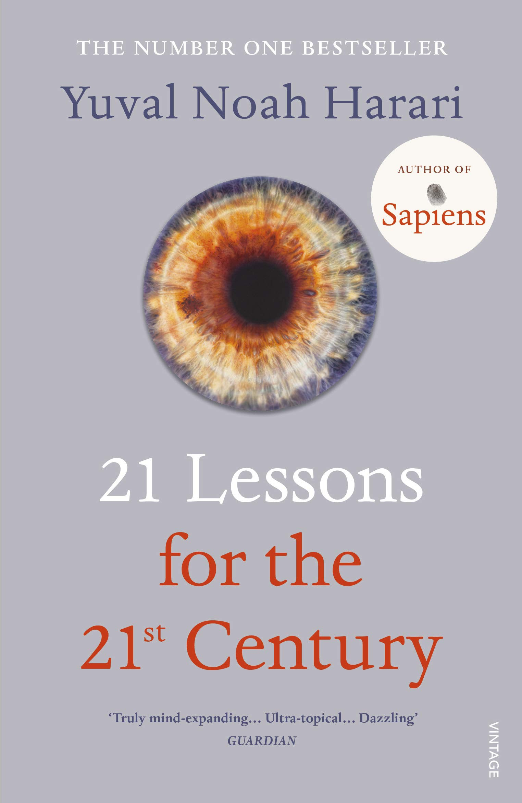

21 Lessons for the 21st Century

I've been staying at Prof. Igor Lerner's place in Birmingham, UK, where there's a lovely dog named Loki. I take him out for walks twice a day, about an hour each time, and I've been bringing this book, 21 Lessons for the 21st Century by Yuval Noah Harari, along to read while Loki has his own time in the pen.
It's quite amazing that the book was written in 2018 — it discusses questions I've been wondering about since generative AIs like ChatGPT, Claude, and Gemini burst onto the scene in 2022–2023: what our own technological advancements mean for the future of humanity. Here are a few quotes that either made me think or that I want to remember, organized by chapter.
Part I: The Technological Challenge
Chapter 1: Disillusionment
The revolutions in biotech and infotech are made by engineers, entrepreneurs and scientists who are hardly aware of the political implications of their decisions, and who certainly don’t represent anyone. Can parliaments and parties take matters into their own hands?
It is difficult to understand current developments partly because liberalism was never a single thing.
Panic is a form of hubris. It comes from the smug feeling that I know exactly where the world is heading — down. … If you feel like running down the street crying “The apocalypse is upon us!”, try telling yourself “No, it’s not that. Truth is, I just don’t understand what’s going on in the world.”
Chapter 2: Work
After all, emotions are not some mystical phenomenon — they are the result of a biochemical process.
It is debatable whether it is better to provide people with universal basic income (the capitalist paradise) or universal basic services (the communist paradise).
Homo sapiens is just not built for satisfaction. Human happiness depends less on objective conditions and more on our own expectations. Expectations, however, tend to adapt to conditions, including to the condition of other people.
Chapter 3: Liberty
Once AI makes better decisions than us about careers and perhaps even relationships, our concept of humanity and of life will have to change.
(For the first time in history, you might be able to sue a philosopher for the unfortunate results of his or her theories, because for the first time in history you could prove a direct causal link between philosophical ideas and real-life events).
Chapter 4: Equality
In the late modern era, however, equality became an ideal in almost all human societies. It was partly due to the rise of the new ideologies of communism and liberalism. But it was also due to the Industrial Revolution, which made the masses more important than ever before.
Consequently, the history of the twentieth century revolved to a large extent around the reduction of inequality between classes, races and genders. … Now it seems that this promise might not be fulfilled.
… the rise of AI might eliminate the economic value and political power of most humans. At the same time, improvements in biotechnology might make it possible to translate economic inequality into biological inequality. … The two processes together — bioengineering coupled with the rise of AI — might therefore result in the separation of humankind into a small class of superhumans and a massive underclass of useless Homo sapiens.
Part II: The Political Challenge
Chapter 5: Community
Humans have bodies. During the last century technology has been distancing us from bodies. … Instead we are absorbed in our smartphones and computers.
Chapter 6: Civilisation
… The offline world seems to breathe fresh life into the ‘clash of civilisations’ thesis. … According to this thesis, humankind has always been divided into diverse civilisations whose members view the world in irreconcilable ways … Though widely held, this thesis is misleading.
In truth, European civilisation is anything Europeans make of it, just as Christianity is anything Christians make of it, Islam is anything Muslims make of it, and Judaism is anything Jews make of it.
Whatever changes await us in the future, they are likely to involve a fraternal struggle within a single civilisation rather than a clash between alien civilisations.
Chapter 7: Nationalism
It is a dangerous mistake to imagine that without nationalism we would all be living in a liberal paradise. More likely we would be living in tribal chaos. … The problem starts when benign patriotism morphs into chauvinistic ultra-nationalism.
While nationalism has many good ideas about how to run a particular nation, unfortunately it has no viable plan for running the world as a whole. … Such extreme isolationism, however, is completely divorced from economic realities.
… humankind now has at least three such enemies — nuclear war, climate change and technological disruption. If despite these common threats humans choose to privilege their particular national loyalties above everything else, the results may be far worse than in 1914 and 1939.
Chapter 8: Religion
A priest is not somebody who knows how to perform the rain dance and end the drought. A priest is somebody who knows how to justify why the rain dance failed, and why we must keep believing in our god even though he seems deaf to all our prayers.
Modern economic theories are so much more relevant than traditional dogmas that it has become common to interpret even ostensibly religious conflicts in economic terms, whereas nobody thinks of doing the reverse.
So what difference would religion make when facing the big questions of the twenty-first century? … they do get to determine who are ‘us’ and who are ‘them’, who we should care for and who we should bomb.
Chapter 9: Immigration
Cultural relativists argue that difference doesn’t imply hierarchy, and one should never prefer one culture over another.
People continue to conduct a heroic struggle against traditional racism without noticing that the battlefront has shifted. Traditional racism is waning, but the world is now full of ‘culturists’.
Culturists often confuse local superiority with objective superiority. … all too often people adopt very general culturist claims, which make little sense. … what is the benchmark?
Part III: Despair and Hope
Chapter 10: Terrorism
Terrorism is a military strategy that hopes to change the political situation by spreading fear rather than by causing material damage. … Hence terrorists resemble a fly that tries to destroy a china shop.
Why are states so sensitive to terrorist provocations? … because the legitimacy of the modern state is based on its promise to keep the public sphere free of political violence. … During the modern era, centralized states gradually reduced the level of political violence within their territories, and in the last few decades Western countries managed to eradicate it almost entirely. … Consequently, even sporadic acts of political violence that kill a few dozen people are seen as a deadly threat to the legitimacy and even survival of the state. A small coin in a big empty jar makes a lot of noise.
Hence while present-day terrorism is mostly theatre, future nuclear terrorism, cyberterrorism or bioterrorism would pose a much more serious threat, and would demand far more drastic reaction from governments.
Chapter 11: War
Why is it so difficult for major powers to wage successful wars in the twenty-first century? … In the past, economic assets were mostly material, … Today the main economic assets consist of technical and institutional knowledge rather than wheat fields, gold mines or even oil fields.
Human stupidity is one of the most important forces in history, yet we often discount it. … the world is far more complicated than a chessboard, and human rationality is not up to the task of really understanding it.
Chapter 12: Humility
Many religions praise the value of humility — but then imagine themselves to be the most important thing in the universe. They mix calls for personal meekness with blatant collective arrogance.
Chapter 13: God
… Religious faith is not a necessary condition for moral behaviour. … Morality doesn’t mean ‘following divine commands’. It means ‘reducing suffering’.
Chapter 14: Secularism
What then is the secular ideal? … the most important secular commitment is to the truth … to compassion … to equality … Finally, secular people cherish responsibility.
Part IV: Truth
Chapter 15: Ignorance
… Behavioural economists and evolutionary psychologists have demonstrated that most human decisions are based on emotional reactions and heuristic shortcuts rather than on rational analysis, and that while our emotions and heuristics were perhaps suitable for dealing with life in the Stone Age, they are woefully inadequate in the Silicon Age.
Not only rationality, but individuality too is a myth. … Rather, we think in groups. … We think we know a lot, even though individually we know very little, because we treat knowledge in the minds of others as if it were our own.
People rarely appreciate their ignorance, because they lock themselves inside an echo chamber of like-minded friends and self-confirming news feeds, where their beliefs are constantly reinforced and seldom challenged.
Worse still, great power inevitably distorts the truth.
If you want truth, you need to escape the black hole of power and allow yourself to waste a lot of time wandering here and there on the periphery.